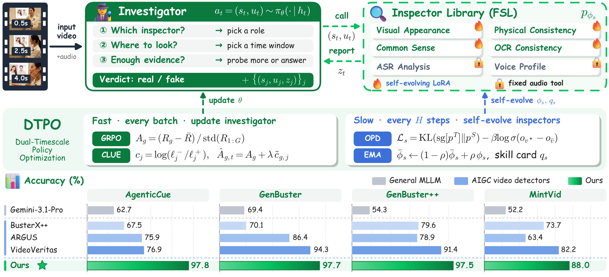
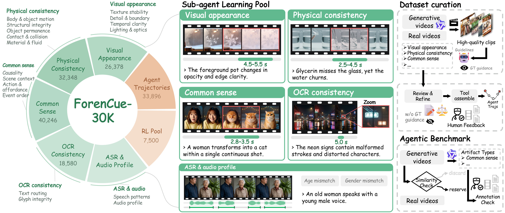

An Investigator and its Self-Evolving Inspectors
for omni AI-generated video detection
Real rollouts of WeVisForensics-DTPO on held-out videos, replayed turn by turn. Each turn the investigator reasons, calls one inspector on a chosen window, and reads its report before deciding whether to look further or conclude. Pick a case by the inspector it showcases, or the real video at the end.
Accuracy against binary detectors, generic MLLMs and MLLM-based forgery detectors on GenBuster-Bench (ID), GenBuster-Bench++ and the six MintVid generators (OOD), and the five categories of AgenticCue.
Recent advances in video generation call for reliable detection grounded in explicit forensic evidence. However, current methods primarily depend on single-pass chain-of-thought reasoning that overlooks brief or localized artifacts, or on predefined multi-agent workflows that offer limited flexibility in selecting relevant inspections. Even with adaptive investigation, optimizing the investigation policy alone does not directly improve the forensic capabilities of fixed experts.
We introduce WeVisForensics, an agentic framework in which a main investigator agent coordinates a self-evolving library of forensic inspector sub-agents spanning visual and audio cues. The investigator learns which artifact type to examine, over which window, and when to conclude, and these interactions provide shared feedback for both levels of agents. Our dual-timescale policy optimization strategy, DTPO, closes this loop through fast reinforcement learning of the investigator and slower refinement of the inspectors, guided by annotated artifact intervals, to report subtle artifacts they once dismissed. Furthermore, we curate ForenCue-30K, combining role-specific forensic annotations and interaction trajectories to supervise individual inspections and their coordination, with an accompanying reinforcement-learning pool. Experiments show that WeVisForensics averages 95.2% detection accuracy across in-domain, out-of-domain and agentic benchmarks, 9.0% above the strongest prior detector, while grounding its verdicts in localized evidence.
Generation artifacts are heterogeneous and often confined to a brief interval. Instead of asking one model to see everything at once, WeVisForensics decides which artifact type to examine, where in time to look, and when the evidence is enough.

Click to enlargeStarts from a sampled overview of the video. Each turn it issues one call, a role and a temporal scope, reads the returned evidence, and decides whether to inspect again or answer real / fake.
Four trainable visual inspectors for appearance, physical consistency, common sense and OCR, plus two audio tools for speech content and voice profile. Each reports a verdict, a confidence and an explanation.
Dual-timescale policy optimization. Updating both levels at once would make each a moving target for the other, so the investigator learns fast while the inspectors are refined slowly on the calls it issues.
Supervised inspectors tend to rationalize subtle artifacts as plausible content. Because they are refined on exactly the windows the investigator chooses to inspect, their reports become more decisive where it matters.
26.9%, lifting its F1 from 66.5% to 97.8%12 role-benchmark pairs30.5% to 8.0%Held-out generated videos replayed with the investigator and inspectors of the early, middle and final checkpoints of one DTPO run. The early inspector calls each scene coherent and the agent answers real; the evolved one names the artifact. Highlighted phrases are the excerpts quoted in the paper.
Pairing the SFT or DTPO-trained investigator with the SFT or evolved inspector library: evolving either level alone helps, and evolving both gives a gain of 3.9%, exceeding the two single-level gains combined by 1.3%.
Instead of one holistic rationale per video, every record isolates one forensic perspective and pins the artifact to a temporal interval, supervising individual inspections and their coordination.
Five role examples from ForenCue-30K, shown as stored. Interaction trajectories start from an execution-grounded planner whose sub-agent calls are executed and gated, then assembled into student turns with training-time metadata stripped. RL pool samples carry role-level evidence intervals, and the audio example is an investigator rollout recorded on one of them during DTPO.

Click to enlargeAppearance, physical, common sense, OCR, ASR and audio profile, each with verdict, confidence, explanation and interval.
117,552 recordsExecution-grounded planner rollouts that invoke the matching inspectors, with training-time metadata stripped from student-facing turns.
33,896 trajectories3,750 unique real and 3,180 unique generated clips over 15 collections and 56 source subsets, repeated with source-dependent weights.
7,500 rowsNewer commercial generators and held-out audio forgeries in five forensic categories, de-duplicated and human-verified.
5 × (500 fake + 500 real)@misc{du2026wevisforensicsselfevolvingagentomni,
title={WeVisForensics: Self-Evolving Agent for Omni AI-Generated Video Detection},
author={Yipeng Du and Yuxi Li and Ying Zhang and Chong Sun and Chen Li and Jing Lyu and Ying Tai},
year={2026},
eprint={2611.21373},
archivePrefix={arXiv},
primaryClass={cs.CV},
url={https://arxiv.org/abs/2611.21373},
}